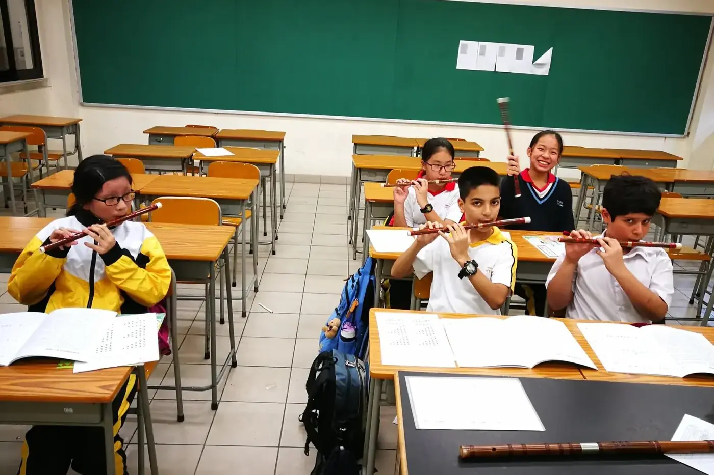

拍子是持續而規律的脈動，節奏是音符與休止在時間裏的長短安排。走路的腳步大致平均，說話卻有長句、短句和停頓，兩者可以同時存在。

讀譜時分不清這兩件事，音符一密，手指就越吹越快。腳步不見了，只剩下一串趕路的話。
拍子像腳步，節奏像說話
用手輕拍平均四下，同時說自己的名字。字數和拍數未必對得上，手卻可以繼續平均。音樂也一樣：一拍可以有一個音，可以有幾個音，也可以沒有新音開始。
選一段簡單旋律做兩次，一次只拍穩定的拍子，一次改拍旋律的節奏。手部動作不同，卻屬於同一首曲。
練節奏時可以先用同一個音，或者口數加拍手，暫時拿走指法問題。遇到休止，手停下來，心裏的時間繼續走。
保持拍子，不等於每個音一樣重。旋律有重心、強弱與分句，這些變化都放在穩定的時間之上。初學先建立共同的脈動，再慢慢認識有彈性的處理，才有依據。
試一首熟悉的歌：腳下或手中維持平均拍子，嘴裏唱旋律。某處總跟不上，就抽出那兩拍再做。
三拍和四拍，差在怎樣分組
兩種拍子都可以慢，也可以快。以常見的 3/4 和 4/4 為例，每小節分別有三個和四個四分音符拍。分組一改，旋律行走的感覺也改了。
入門辨認時，把每小節第一拍稍作強調，數「一二三、一二三」，再數「一二三四、一二三四」。實際作品的重音還受旋律、和聲與風格影響，不能每一拍都機械加重。
比較時把節拍器定在同一速度，分別拍兩種組合。速度也跟着改的話，很容易把快慢誤當成拍號的差別。條件固定了，耳朵才較易感覺每組何時重新開始。
再把一個簡單節奏放進兩種分組，聽原來的重音落在哪裏。相同的音符排列，因小節位置不同，會帶來另一種推動感。
練新曲前，先圈出幾條小節線，確認每小節的拍數。有弱起的曲，開頭未必由完整的第一拍開始。例如 4/4 的曲開頭只有一個四分音符，這個音數「四」，小節線之後才是「一」。
選兩首拍號不同的小曲，先拍，再唱，然後才用樂器演奏。聽見每組拍子回來，小節線就成了旋律的路標。
6/8 為甚麼是兩個大步？
六個八分音符，很多初學者會當成六個同樣的大拍。常見的 6/8 屬複二拍子，感覺上是兩組、每組三個八分音符，腳下走出兩個大拍。具體數法仍要配合速度和作品。
慢慢數「一二三、四五六」，讓一和四成為兩組的起點。這是建立分組感的練習，一和四不用每次敲得很重。
最易混淆的是 3/4，因為一小節同樣容納得下六個八分音符。分組卻不同：3/4 可感覺成 2＋2＋2，6/8 常感覺成 3＋3。把六下拍手用兩種方式分組，比背定義清楚。
速度慢時可以數細分；速度較快時改為感覺兩個大拍，音樂才流動。一直用六個很重的動作數拍，演奏會變得笨重。
拿一段 6/8 樂譜，圈出每組起點，先只拍節奏，再加入音高。延音跨過分組時，心裏仍保持原來的脈動，不要每逢新音就重新數一。
可以把拍手和演奏錄成短片，檢查兩個大步是否仍聽得見。分組清楚了，旋律像輕輕擺動的船，有兩個穩定的推力帶着它走。
切分：音落在拍子旁邊
有些旋律的重心像輕輕偏離正拍，聽起來有推動力。切分常由弱位置起音，延續到較強的位置，或者改變通常預期的重音安排。
先決條件是拍子不動。拍子跟着音符一起移，切分就聽不出來。所以練習要分開兩條線：一隻手維持拍點，另一隻手或聲音做節奏。
把每拍分成兩份，數「一和二和」。最簡單的例子是兩拍之內的八分、四分、八分：第一個音在「一」，第二個音在第一個「和」起音，延續過「二」，第三個音在第二個「和」。
經過「二」時不要重新敲或吐音，除非譜上要求如此。
速度慢一些，讓耳朵有時間辨認。總把音拉回正拍的話，就先只拍節奏，不加音高和指法，時間關係清楚了才放回樂器。
腳下的規律和旋律開始時會互相拉扯，這正是要練的協調。每次做短短兩小節，免得疲倦後只剩模仿外形。之後跟一段清楚的伴奏或節拍一起試奏，感覺音符靠在拍子旁邊，同時仍知道正拍在哪裏。
常見問題
拍號上下兩個數字是甚麼意思？
上面的數字通常表示每小節有多少個單位，下面的數字表示單位是哪種音符：4 是四分音符，8 是八分音符。3/4 即三個四分音符，6/8 即六個八分音符。
3/4 和 6/8 一小節一樣長嗎？
音值總和相同，都等於六個八分音符。分組不同，所以感覺不同。實際多少秒要看速度。
小朋友拍不穩，先練拍子還是節奏？
先分開練。能穩定拍平均的拍子，再改拍旋律的節奏，之後才兩樣一起做。
揀一首熟悉的歌，腳踏拍子、口唱旋律，把跟不上的兩拍圈出來。下一步可讀時值記號：休止符、延音線、附點與簡譜，學看音的長度。